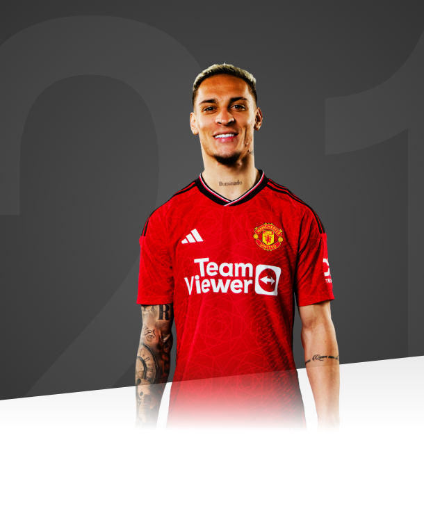

In Antony, Manchester United have a dynamic winger who can light up the right-hand side of our attack.

AGE
23
APPEARANCES
50
CLEAN SHEETS
8
BIOGRAPHY
A product of the São Paulo youth system, Antony has been honing his skills since he joined them in 2010.
Eight years later, in 2018, the then 18-year-old won the J League Challenge competition with his youth team and went on to be named the player of the tournament, prompting his senior team breakthrough.
That same year, the Brazilian signed a contract with Sao Paulo's first team and made his official debut on 15 November 2018.
Two years later, Dutch giants Ajax came knocking and signed the exciting winger to begin a blossoming player/manager partnership between him and then manager Erik ten Hag.
But before he joined them in the summer, Antony was named in the U23s Brazil national team at the Tokyo 2020 Olympics, held in 2021, where they would eventually stand at the top of the podium with gold medals as champions.
Antony met up with his new club in the months that followed and scored his first goal for the Eredivisie champions in a 1-0 win over Sparta Rotterdam, endearing himself to the Ajax faithful.
He would go on to earn two successive Eredivisie titles, as well as the KNVB Cup in 2021 to complete the domestic double.
Antony concluded his time in the Dutch capital with 24 goals and 22 assists in 82 appearances and was destined to join Ten Hag on his next venture at Manchester United.
As well as reuniting with his ex-boss, the summer 2022 deadline-day signing found himself among friends at Carrington as the Brazilian linked up with former Ajax team-mate Lisandro Martinez and international colleagues Casemiro and Fred.
Antony made an instant impact in English football, scoring on his debut, the 3-1 win over Arsenal in September 2022. He followed this up with a clutch of superb strikes across the campaign, winning United's Goal of the Month award four times and ultimately claiming our Goal of the Season accolade as a result.
His curled finish in the Europa League play-off second leg against Barcelona was the finish that sealed the award for the Brazilian, capping a fruitful first season at Old Trafford, during which he also won the Carabao Cup.